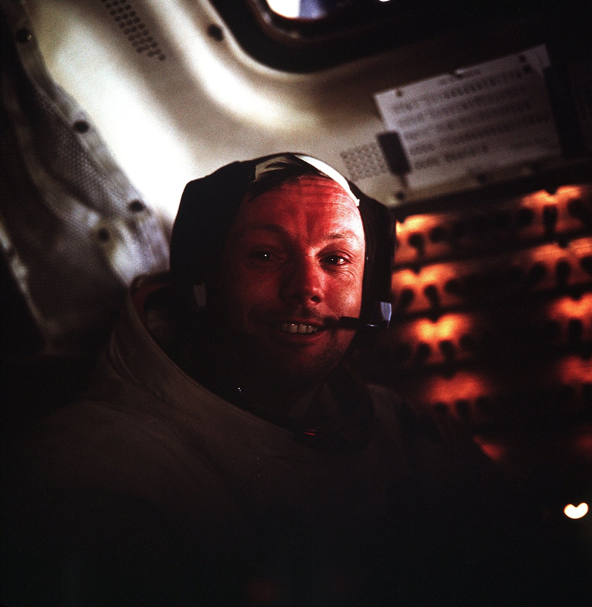
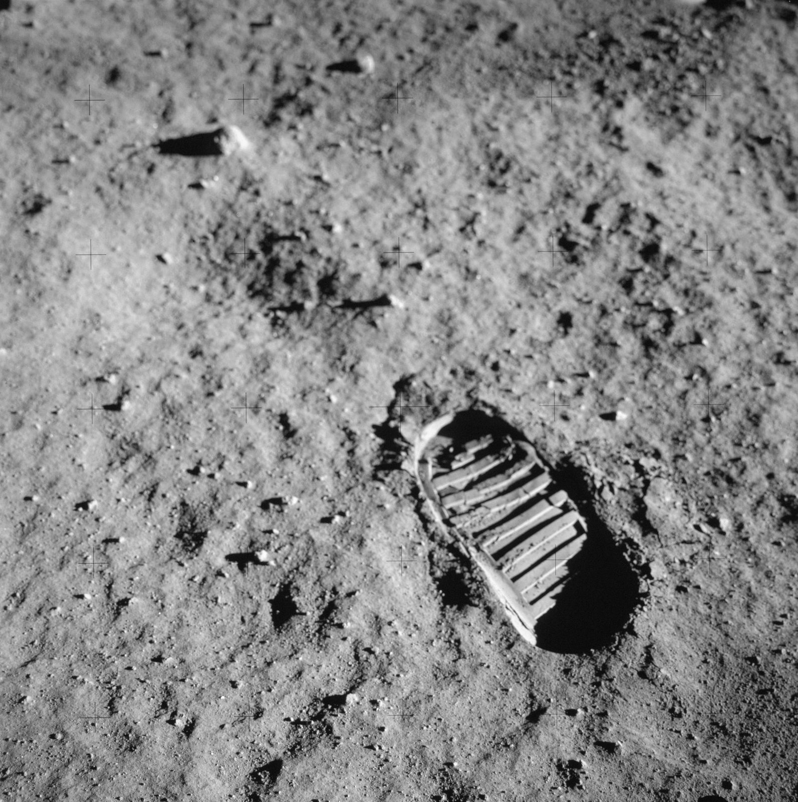
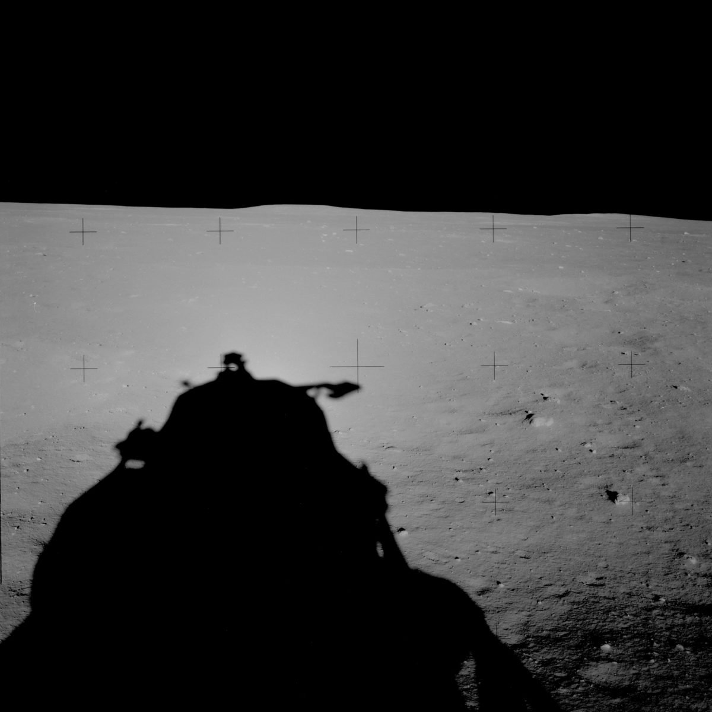
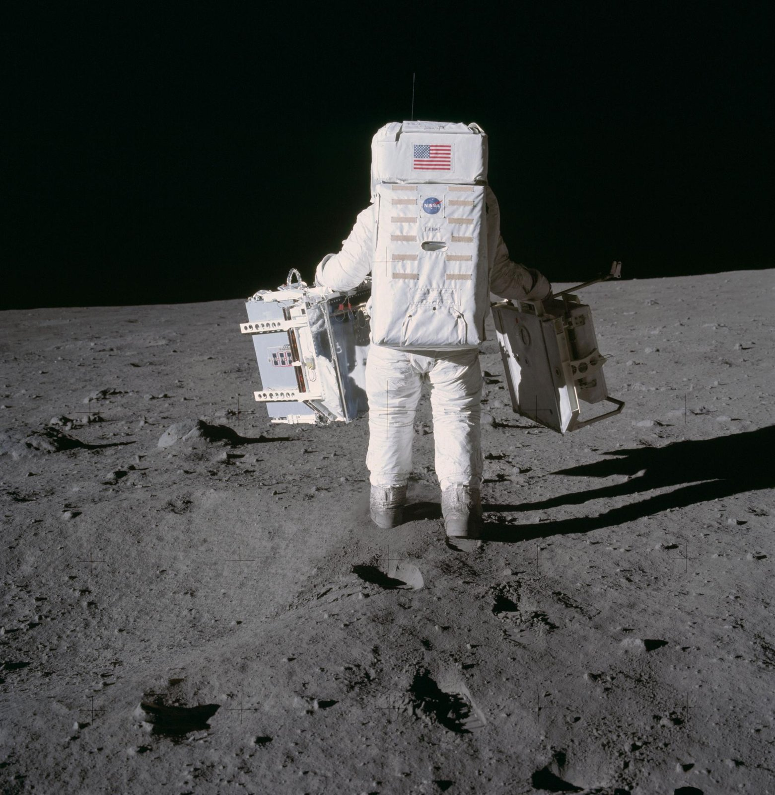

인류가 처음 달에서 자신을 찍었을 때, 손에 든 건 필름 카메라였다.
1969년 여름, 아폴로 11호가 달에 내렸다. 우리가 그 순간을 기억하는 방식은 대부분 사진이다. 성조기 옆의 우주비행사, 잿빛 흙에 남은 부츠 자국, 헬멧에 비친 또 한 사람. 그런데 이 역사적인 이미지들이 전부 필름으로 찍혔다는 걸 떠올리는 사람은 많지 않다. 디지털이 없던 시절, 달에 올라간 건 필름 카메라였다.
달에 가져간 카메라

아폴로 11호가 달 표면에서 쓴 카메라는 핫셀블라드였다. 스웨덴제 중형 카메라에 NASA 사양을 입힌 은색 데이터 카메라(HDC), 렌즈는 독일 자이스의 비오곤 60mm f5.6. 이 카메라엔 우리가 아는 눈에 대고 보는 파인더가 없었다. 우주비행사는 카메라를 가슴에 붙인 채 몸을 돌려 겨눴다. 액정도, 오토포커스도 당연히 없었다. 닐 암스트롱이 이 카메라를 주로 들었고, 우리가 아는 달 사진 대부분이 그의 손에서 나왔다.
코닥 70mm, 그리고 사진 속 십자

필름은 코닥이 이 임무를 위해 특별히 만든 70mm였다. 베이스를 얇게 만들어 한 번 장전에 컬러 160장, 흑백 200장을 담았다. 컬러는 에크타크롬, 흑백은 파나토믹-X. 아폴로 사진을 자세히 보면 화면 곳곳에 작은 십자 표식이 박혀 있다. 렌즈 앞에 격자를 새긴 유리판(레조 플레이트)을 넣어, 사진에 찍힌 사물의 거리와 크기를 나중에 계측할 수 있게 한 것이다. 장식이 아니라 과학이었다.
노출계도 없이, 감으로

생각해보면 조건이 지독하다. 두꺼운 장갑을 낀 손, 눈에 댈 수 없는 파인더, 공기가 없어 빛과 그림자가 극단으로 갈리는 환경. 우주비행사들은 미리 정해둔 노출값에 맞춰, 사실상 감으로 셔터를 눌렀다. 그렇게 찍은 사진이 반세기가 지나도록 인류의 대표 이미지로 남아 있다. 장비가 아니라 준비와 감각이 사진을 만든다는 걸, 이보다 잘 보여주는 예가 있을까.
카메라는 두고, 필름만

가장 좋아하는 대목이 있다. 돌아올 때 그들은 카메라 몸체를 달에 버리고 왔다. 지구로 가져온 건 필름이 든 매거진뿐이다. 이유는 단순하다. 돌아오는 우주선의 무게를 조금이라도 줄여야 했으니까. 사진은 필름 안에 있으니, 몸체는 필요 없었다. 아폴로 11호부터 17호까지, 그렇게 달에 남겨진 핫셀블라드가 열두 대다. 지금도 달 어딘가에, 인류가 처음 자신을 찍은 카메라들이 그대로 놓여 있다.
한 장의 무게
우리는 하루에도 수백 장을 찍고 지운다. 그들은 한 매거진에 담긴 몇백 장으로 인류의 가장 먼 여행을 기록했다. 되감을 수도, 미리 볼 수도 없이. 필름 한 롤을 아껴 감아본 사람이라면 그 긴장을 조금은 안다. 달에 두고 온 카메라 이야기가 여전히 마음을 울리는 건, 그게 결국 한 장 한 장을 귀하게 여기던 시절의 이야기이기 때문이다.
직접 보고 싶다면
그 필름들은 지금도 볼 수 있다. 아폴로가 달에서 감은 필름 매거진은 전부 고해상도로 스캔되어 공개돼 있다. 십자 표식, 살짝 흔들린 프레임, 노출이 어긋난 컷까지 그대로다. 완벽하게 정리된 대표 사진 몇 장이 아니라, 필름 한 통을 처음부터 끝까지 넘겨보는 경험이다. 달에서 돌아온 필름을, 우리는 한 컷씩 되감아 볼 수 있다.
Apollo Image Archive
아폴로가 달에서 찍은 필름 원본 스캔을 프레임 단위로 직접 볼 수 있는 아카이브. 십자 표식까지 그대로 남아 있습니다.